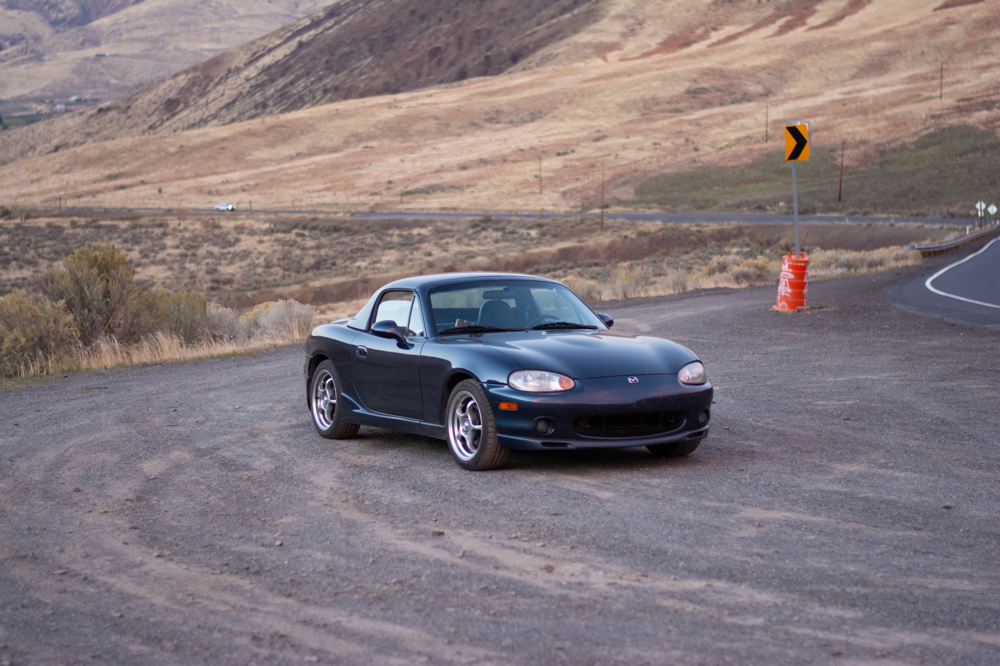
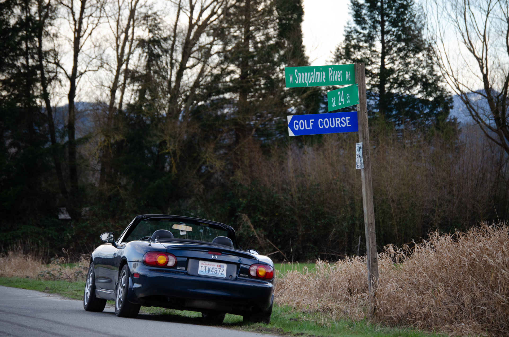

Small, light, simple and fast enough to be fun at any speed. I bought it in 2025, and I’ve kept it running myself ever since.
The Miata is light and has precise steering. A normal commute becomes the best part of the day, and you can use all of the car without doing anything reckless.
The 1.8 is happiest high in the rev range. Rowing through the gears and revving it out is a small thrill every time.
Every shift is your call. The short, direct gearbox keeps you involved in the drive instead of just along for the ride.
There’s very little between you and the machine. It’s easy to understand, easy to work on, and rewarding to fix.
Almost 200,000 miles, many fun drives, and it has never left me stranded. Good bones and regular care go a long way.
Insurance is low, parts are everywhere, and the Miata community has documented just about everything. Owning one is easy on the wallet.
